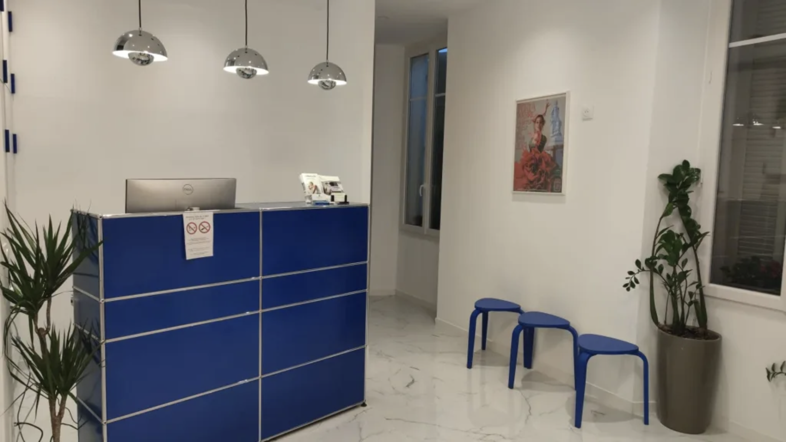
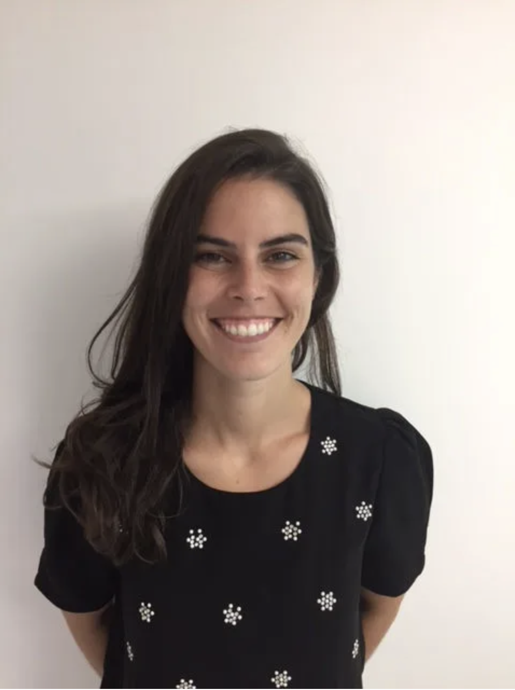

Soins en douceur
Une prise en charge indolore et rassurante pour votre confort absolu.
Une approche humaine et technologique pour une santé bucco-dentaire d'excellence au cœur de Cannes.


Forte d'une expérience internationale entre le Luxembourg, la France et l'Espagne, j'ai conçu ce cabinet comme un espace de soin serein et haut de gamme.
Mon parcours m'a permis de me spécialiser en parodontologie et implantologie chirurgicale, avec une attention particulière portée à l'esthétique et aux technologies Laser de pointe.
Chaque patient bénéficie d'un accompagnement personnalisé, où la douceur du soin rencontre la précision chirurgicale.
Une prise en charge indolore et rassurante pour votre confort absolu.
Équipements de dernière génération, incluant le LASER dentaire.
Un suivi personnalisé et des conseils adaptés à chaque sourire.
Protocoles de stérilisation et d'hygiène rigoureux et certifiés.
Découvrez l’ensemble des soins proposés au cabinet, avec une approche moderne, esthétique et personnalisée.
Voir tous les soinsUn cursus académique d'excellence combiné à une pratique internationale rigoureuse pour vous offrir les meilleurs standards de soins.